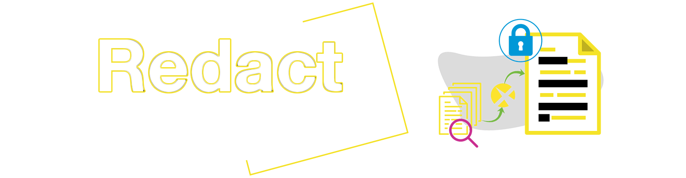
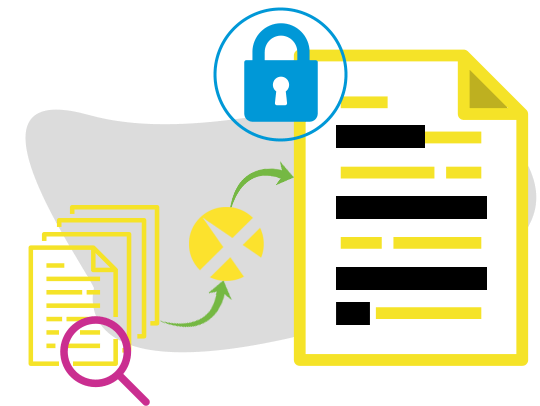

Text Redaction
SPAR10's text redaction solution, enables you to automatically identify and remove confidential information within any document while retaining its overall context. SPAR10 is trained to redact the sensitive fields in all documents automatically, quickly and accurately. SPAR10 can handle medical records, tax and insurance forms, bank statements, legal documentation, purchase orders and more to automatically redact personal information such as names, email IDs, zip codes, credit card numbers, postal addresses. This saves you time and effort while ensuring failproof security for you and your customers.

Tech stack
SPAR10 uses Python libraries for redaction.
PDF, Docx
Library Used: PyMuPDF, aspose.words, fitz, H5py
NLP

Library Used: SpaCy
SPAR10 advantages
From detailed bank statements and electronic health records to large spreadsheets and more, SPAR10 can help you:
With consistent and automated redaction
Redact thousands of pages, images, video and audio files in a few clicks
Reduce review costs
Achieve 100% accuracy with no manual intervention

Features
-
Automated redaction
SPAR10 automatically identifies PII, PCI, PHI and more as per the requirements and redacts it. No manual intervention is required to select fields to be redacted. -
On-prem, cloud or hybrid
SPAR10 can redact documents stored on-prem, in the cloud or even in a hybrid environment. -
Pattern redaction
SPAR10 enables you to identify and remove words and phrases that match named patterns in text such as bank account numbers, personal identification numbers, email addresses and so on.
-
Minimal training required
With the help of artificial intelligence and machine learning, SPAR10 can intuitively identify and redact PII from scanned documents, PDFs, image files and more. -
Volume
SPAR10 allows flexibility and scalability, which means it is capable of redacting any volume of documents while ensuring accuracy and consistency. -
Compliance
SPAR10 adheres to data compliance laws such as GDPR, HIPPA and more in protecting sensitive information.